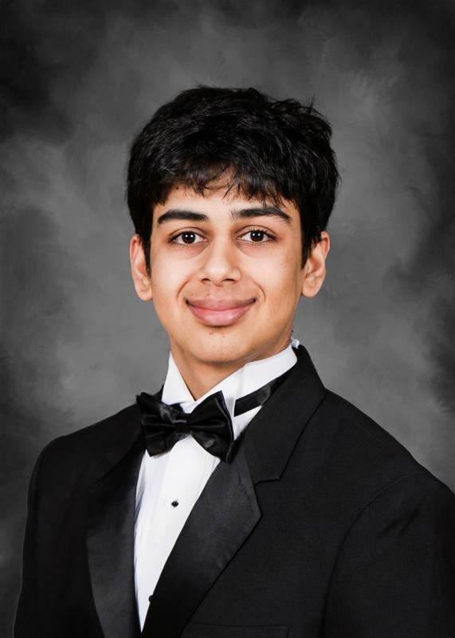
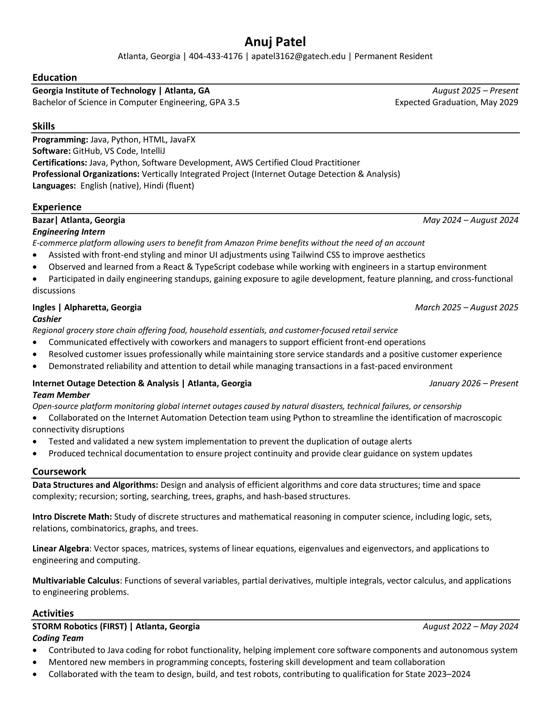
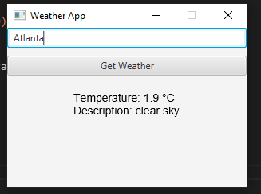
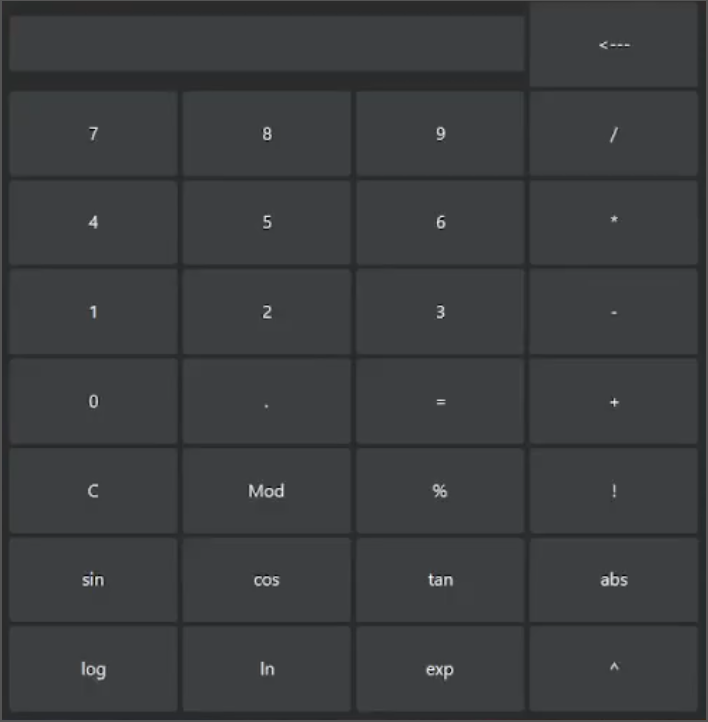
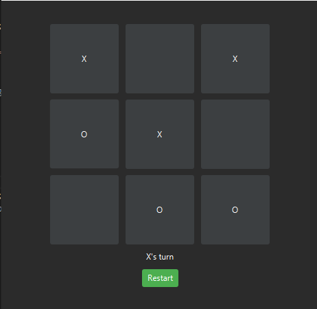

Computer Engineering Major at the Georgia Institute of Technology
Graduating May 2029
Hi, I’m a Computer Engineering student at Georgia Tech, and I’m most excited to explore the intersection of software and silicon. Specifically, how efficient code and hardware design come together in semiconductors.
A detailed look at my background, journey into engineering, and what drives me forward.
After growing up in Alpharetta and attending Denmark High School, I realized through both my classroom coding projects and independent exploration that I wasn’t just interested in writing software, but in understanding the hardware and semiconductors that make modern computing possible.
At Georgia Tech, I’m currently part of a VIP team working with IODA (Internet Outage Detection and Analysis), where I'm gaining hands-on experience in monitoring and analyzing global internet connectivity. Looking ahead, I plan to participate in the ECE Opportunity Research Scholars (ORS) program next year to further bridge the gap between my software and hardware skills through research.
Looking ahead, I am working toward a career in semiconductor design and high-performance computing. I’m excited to continue building the technical foundation necessary to develop the next generation of hardware. Feel free to explore my projects below to see what I’ve been working on.
I was born in Madhya Pradesh, India, before my family moved to the U.S. when I was a baby. Growing up, we lived in several states before eventually settling in Georgia. At home, I am fluent in Hindi, which allows me to stay deeply connected to my heritage. Outside of my engineering studies, I enjoy weightlifting and following sports. I’ve found that the same consistency and discipline required to progress is in the gym is exactly what I need when I try to push my technical skills to the next level.
ECE Career Fair resume — formatted for technical recruiting.

In the next 10–15 years, I envision myself as someone who specializes in the hardware-software interface of the next generation of semiconductors. My goal is to lead the design of computing systems that integrate VLSI logic with optimized software.
I am driven by the need for energy efficient computing. As the demand for AI and global connectivity grows, our current hardware is reaching its thermal and power limits. I want to use my skills in Verilog and hardware-software design to build processors that provide more efficient performance to ensure technological innovation doesn't come at the cost of our planet's environment.
My focus is mastering the SysArch and CHEA threads, specifically excelling in Digital Design and Hardware-Software Systems. I am prioritizing building a strong network through study groups and technical clubs to foster collaborative learning. I want to gain hands-on experience through the ORS program and maintain a strong GPA for recruiting in the future.
During my sophomore and junior years, I plan to bridge theory and application by building hardware-software projects and strengthening my technical interview skills. My primary objective is to secure a junior-year internship at a semiconductor or high-performance computing firm where I can apply my Verilog and low-level programming skills.
In my final years, I will focus on a high-impact Senior Design capstone and gaining more research experience through the GTRI. By taking on a leadership role within clubs or my VIP team, I intend to mentor younger students while recruiting for a role post-graduation.
In my first five years post-graduation, I aim to be a Hardware Architect designing specialized silicon that powers the next generation of AI. My goal is to solve the efficiency bottlenecks of modern hardware, contributing to product releases that provide massive performance-per-watt gains. This phase will set the stage for my long-term vision: making global computing more sustainable.
The NBA Lead Indicator is a dedicated hardware device designed to provide at-a-glance sports updates without the distraction of a smartphone. Using an ESP32 microcontroller, the system fetches live game data via an API to determine the current score of a selected game. Two LEDs serve as a physical dashboard, instantly communicating whether the home or away team holds the lead, allowing for a focused work environment while staying connected to the game.
My interest in this project stems from a desire to bridge the gap between cloud-based data and physical indicators. As a student balancing a heavy courseload at Georgia Tech, I noticed how frequently checking scores on my phone disrupted my deep-work flow. This led me to explore how IoT devices can act as tools that convey information through simple visual cues.
The engineering plan followed a modular approach: data acquisition, logic processing, and hardware output. Operating within the constraints of a student budget , I chose the ESP32 for its integrated WiFi capabilities and low cost. I considered using a full LCD screen but rejected it in favor of two high-brightness LEDs to keep the design clean and the logic straightforward.
The system architecture consists of the ESP32 connected to the ESPN API. On the software side, the microcontroller performs a periodic HTTP GET request, parses the resulting JSON string to isolate the scores, and compares the values. On the hardware side, the ESP32 drives the LEDs through current-limiting resistors on a breadboard.
[PLACEHOLDER]
[PLACEHOLDER]

I built a JavaFX application that fetches real-time meteorological data from a REST API to display current conditions for any city. This project introduced me to JSON parsing and the challenges of handling asynchronous data to keep a UI responsive while waiting for network responses.

This application provides a full-featured calculator interface capable of handling basic arithmetic and advanced scientific functions. I focused on implementing robust input validation and an efficient algorithm for order of operations, ensuring the "backend" logic perfectly matched the user's "frontend" input.

This interactive game was an exploration into state management and conditional logic within a graphical environment. I programmed the system to dynamically recognize win conditions and alternate player turns, which sparked my initial interest in how software logic controls a physical user interface.